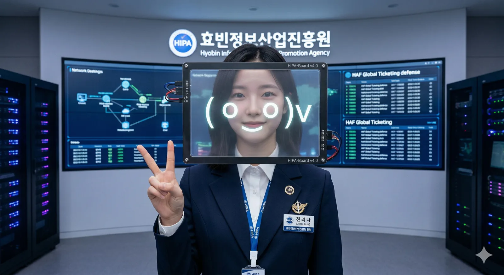

| 이름 | 천리나 (Cheon Ri-na) 千璃奈 |
|---|---|
| 출생 | 1995년 11월 13일 (만 30세) 효빈광역시 북구 실본동 |
| 국적 | 대한민국 |
| 학력 | 효빈과학고등학교 (졸업) 효빈대학교 공과대학 (컴퓨터공학 / 학·석·박사 통합과정 수료) |
| 현직 | 효빈정보산업진흥원 제9대 원장 (2023.09 ~ ) |
| 소속/직함 | '전설의 해커 R' (비공식) |
| 별명 | 실본동의 전자요정, 리나쨩 보드 전설의 해커 R, 효빈시의 리얼 AI |
| MBTI | INTP |
대한민국의 공학자이자 해커 출신 관료. 현재 효빈광역시의 디지털 심장인 효빈정보산업진흥원(HIPA) 제9대 원장이다.
1995년 효빈직할시가 '광역시'로 승격된 직후 태어난 명실상부한 '광역시 1세대' 인물. 만 27세라는 파격적인 나이에 박효빈 시장에게 발탁되어 원장 자리에 올랐다. "마음은 기술로 전할 수 있어"라는 모토 아래, 블록체인 기반 굿즈 인증, 효빈 메타버스 구축, HAF 방어망 설계 등 효빈시의 서브컬처 인프라를 최첨단 IT 기술로 떠받치고 있는 '디지털 덕질의 총본산'이다.
"리나쨩 보드, '접속 완료'. 지금부터 효빈시의 서버는 제가 지킵니다. ( o_o )v"
북구 실본동에서 나고 자란 토박이다. 인형보다 키보드와 납땜 인두를 더 좋아했던 공학 천재로, 초등학생 시절이던 2006년 윤대환 시장 시절의 두청운수 버스 배차 시스템 조작을 집에서 낡은 노트북으로 해킹해 최초로 포착해 낸 떡잎부터 남다른 괴수였다. 초등학생한테 뚫린 효빈시 보안 수준 무엇
이후 대학생이 되어 박현만 시장 지지 세력에게 익명으로 조작 알고리즘 소스 코드를 전달한 '전설의 해커 R'이 바로 천리나 원장이라는 것이 정설이다. 본인은 항상 "기억 안 나( o_o )"라며 시치미를 떼지만, 당시 공격 코드 주석에 쓰인 이모티콘이 지금 원장의 습관과 판박이라 사실상 기정사실화되었다.
효빈대학교 재학 시절에는 학교 전산망의 보안 취약점을 혼자 해킹해서 찾아낸 뒤 직접 보안 패치까지 해놓고 튀는 바람에 전산팀 직원들이 무릎을 꿇고 제발 스카우트되어 달라고 빌었다는 전설적인 일화가 있다.
그녀의 정체성이자 본체(...). 항상 얼굴에 쓰고 다니는 디지털 가면은 단순한 코스프레용 소품이 아니라, 그녀가 진흥원 시제품 제작실에서 직접 설계하고 납땜해서 만든 초고도 웨어러블 디바이스다.
심각한 대인기피증과 낯가림을 앓고 있다. 리나쨩 보드가 없으면 사람 눈을 3초 이상 마주치지 못하며, 회의 때도 구석에 쭈그려 앉아 태블릿만 두드린다. 말할 때는 항상 "리나쨩 보드, '감동'!", "리나쨩 보드, '수정'!" 같은 독특한 접두사를 붙인다. [1]
하지만 코딩이나 기계, 서버 아키텍처 이야기만 나오면 보드가 꺼질 정도로 랩을 쏟아낸다. 그녀가 내리는 업무 지시와 코딩 설계도는 버그 하나 없이 너무나도 완벽해서 진흥원 직원들은 종종 "사실 원장님은 실존 인물이 아니라 HIPA 메인프레임에 서식하는 초거대 AI가 아닐까?"라며 진지하게 농담을 주고받는다.
효빈대 박사과정 시절, 효빈시가 주최한 '공공데이터 활용 해커톤'에 참가해 '최적의 덕질 코스 안내 및 굿즈 재고 실시간 파악 AI'를 출품하여 압도적인 1위로 우승했다. 당시 심사위원이던 박효빈 시장은 이 미친듯한 실용성(?)에 감격하여, "나와 함께 효빈시 전체를 씹덕 스마트 시티로 만들자!"며 그녀를 진흥원장으로 납치하다시피 스카우트했다.
2023년 HAF 글로벌 티켓팅 오픈 당시, 중국 해커 그룹과 전 세계의 암표상 매크로 부대가 연합하여 진흥원 서버에 사상 최대 규모의 디도스(DDoS) 공격을 감행했다. 서버 다운까지 단 1분을 남겨둔 절체절명의 상황.
상황실 구석에 박혀있던 천리나 원장이 조용히 일어났다. 그녀는 태블릿에 연결된 홀로그램 키보드를 띄우더니 빛의 속도로 타건을 시작했다. 단 3분 만에 수백 개의 공격 IP 대역을 실시간으로 우회 차단하고, 매크로 봇들의 패턴을 역연산하여 모조리 밴(Ban) 때려버리는 기염을 토했다. 상황이 종료된 후, 메인 모니터에는 공격자들을 농락하듯 거대한 ( ^o^ )v 이모티콘이 떠올랐고 이 사건으로 진흥원 정보보호팀 직원들은 그녀를 신으로 숭배하게 되었다.
이미사 (효빈광역시사회서비스원장): 11월생의 차가운 천재와 8월생의 따뜻한 성녀 조합. 점심을 자주 거르는 리나를 위해 이미사가 직접 구운 쿠키를 들고 진흥원까지 찾아와 먹여준다(?). 이에 대한 보답으로 리나는 이미사의 생일마다 전용 AR 축전 팝업을 띄워주며, 사회서비스원의 서버를 미 국방부 펜타곤급 방어망으로 업그레이드 해버렸다.
이직하 (효빈테크노파크 원장): 하드웨어와 소프트웨어의 완벽한 콤비. 리나가 소프트웨어 아이디어를 내면 직하가 3D 프린터로 뚝딱 깎아온다. 하지만 밴드부 부장 출신답게 텐션이 너무 높은 직하 언니가 다가오면 리나는 ( > < ) 표정을 지으며 도망가기 바쁘다.
탁민석 (효빈애니메이션본부 이사장): 과거 탁 이사장이 리나쨩 보드의 초기 디자인을 보고 "완벽하지만... 고양이가 부족하군."이라며 훈수를 두었다가, 빡친 리나에게 역해킹을 당해 이사장실 컴퓨터 바탕화면이 24시간 동안 기괴한 고양이 합성 사진으로 고정된 적이 있다. 이후 탁 이사장은 리나 원장에게 매우 정중하게 대한다. 물리적 깡패와 디지털 깡패의 만남
진흥원 내 최대의 미스터리. 항상 보드로 얼굴을 가리고 있어 맨 얼굴을 본 직원이 거의 없다. 그러나 진흥원 회식 때 실수로 보드가 벗겨진 적이 있는데, 당시 맨 얼굴을 본 직원들이 너무 예뻐서 5초간 단체로 굳어버렸다는 도시 전설이 내려온다. 물론 본인은 부끄러워서 빛의 속도로 옥상으로 도주했다.
고양이를 광적으로 좋아한다. 진흥원 옥상에 최첨단 냉난방 시설과 자동 급식기가 완비된 초호화 '길고양이 쉼터'를 몰래 지어놓고 운영하다가 시설관리팀에 걸린 적이 있다. 지금은 오히려 진흥원 차원에서 공식 복지 시설(?)로 합법화해 주었다. 주요 돌봄 고양이의 이름은 '디지(Digital)'와 '태그(Tag)'.
하드웨어 납땜에도 일가견이 있다. 진흥원 내의 밋밋한 탕비실 커피머신과 출입구 자동문을 본인이 직접 밤새 뜯어고쳐 '말하는 자동문'으로 개조해 놨다. 출근할 때마다 문이 열리며 "원장님, 오늘 서버 상태 최상입니다. 냥!"이라고 말하게 세팅해 두어 아침마다 출근하는 직원들을 강제로 덕밍아웃시키고 있다.
메타버스 효빈에서 남몰래 아이돌 아바타를 띄워놓고 춤을 춘다는 소문이 파다하다. 닉네임은 비밀이지만, 아바타의 관절 움직임과 춤 선이 너무나도 정교하고 프레임 드랍이 없어서 유저들 사이에서는 '서버 관리자가 춤추고 있는 게 분명하다'는 합리적 의심을 받고 있다.